Вітальня · журнал «ДентАрт» 2015 №3
Стиль Італьяно — фізіологічність, доступність і легка відтворюваність
STYLE ITALIANO — PHYSIOLOGY, ACCESSIBILITY AND EASY REPRODUCIBILITY
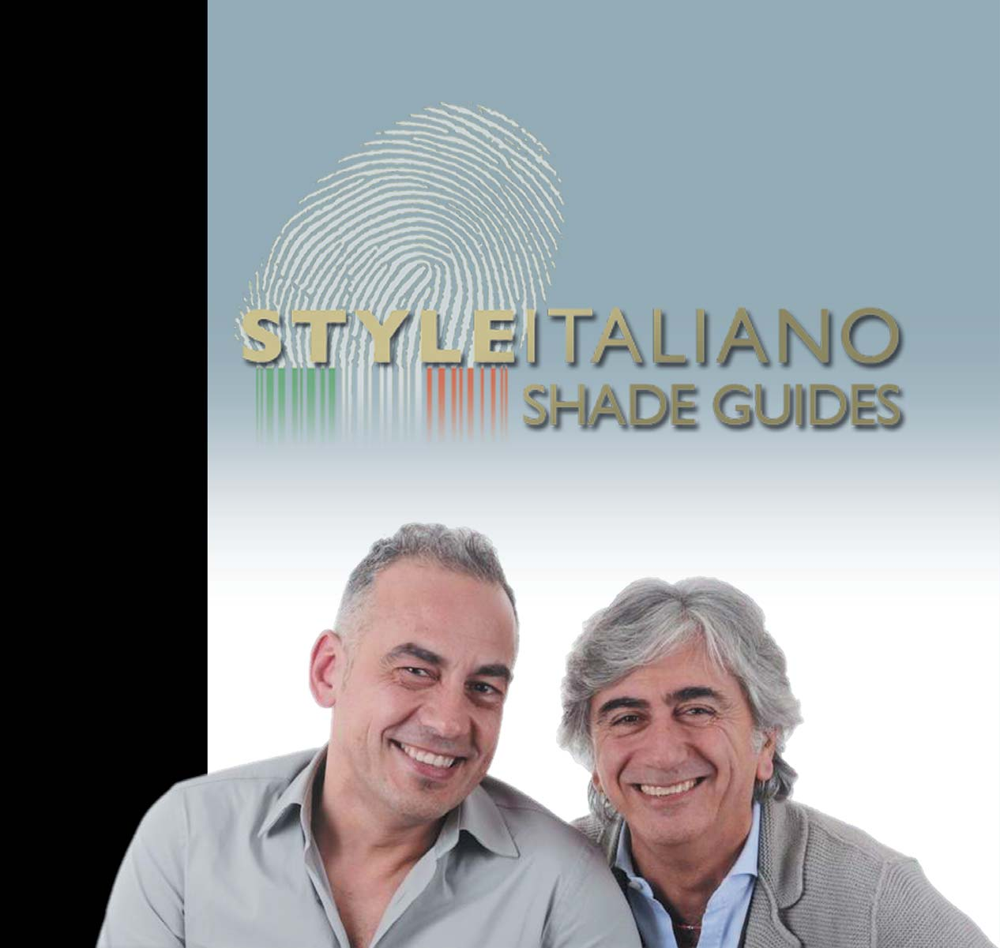
Цю зустріч у «Вітальні» ДентАрту ми планували давно, кілька років, але для того, щоб вона відбулася, потрібно було вибрати особливе місце і особливу атмосферу... Отже, «Вітальня» ДентАрту у Флоренції на завершенні Весняного конгресу Європейської академії естетичної стоматології, і наші гості — Анжело Путіньяно і Вальтер Девото, активні члени академії, котрі заснували клуб, спільноту «Стайл Італьяно»...
«Естетика — це частина італійської культури та історії»
ДентАрт: Бон джорно, Анжело, бон джорно, Вальтере! Ми знайомі з вами давно... З Вальтером ми познайомилися у Венеції на конгресі Міжнародної федерації естетичної стоматології у 2004 році завдяки фірмі Мічеріум, Анжело виступав у Полтаві на семінарі ДентАрт за спонсорської підтримки Дентсплай 2006 року, але тоді не було нічого сказано про існування італійського стилю в реставрації зубів... Як виникла ідея створення спільноти Стайл Італьяно?
Анжело: У нас була спільна ідея — допомогти стоматологам-практикам застосовувати композит для лікування певних клінічних випадків. Нашою першою спільною метою було з'ясувати, які зазвичай застосовуються програми для загальної профілактики і як стоматологи упоруються з різними складними клінічними випадками за допомогою різних матеріалів.
Вальтер: Особисто я почав працювати з Анжело, коли займався як стоматологією, так і викладацькою діяльністю у цій галузі. У той час я активно шукав компанію для просування тих чи інших матеріалів. Ідея була така: знайти експерта-товариша для створення спільної нової манери викладання, орієнтованої на потреби стоматологів, і спробувати «запустити» компанію, яка б сприяла поліпшенню роботи стоматологів загальної практики, робила б їхню роботу простішою, дешевшою і якіснішою. Для цього ми і об'єднали свої зусилля.
Чому така назва компанії — «Стайл Італьяно»? Тому що, по-перше, ми самі італійці, а по-друге, естетика — це частина італійської культури та історії, тому ми зупинилися на такій назві. Ну, і щоб ще раз підкреслити, що італійці в естетиці найкращі!
ДентАрт: Напевно, кожен стоматолог у кожній країні волів би працювати в естетичній стоматології, задовольняючи вимоги пацієнтів, яких турбують нині не стільки проблеми здоров'я, скільки проблеми мати кращий вигляд, краще усміхатися... У чому полягає місія Стайл Італьяно, чим ви можете допомогти такому стражденному стоматологові?
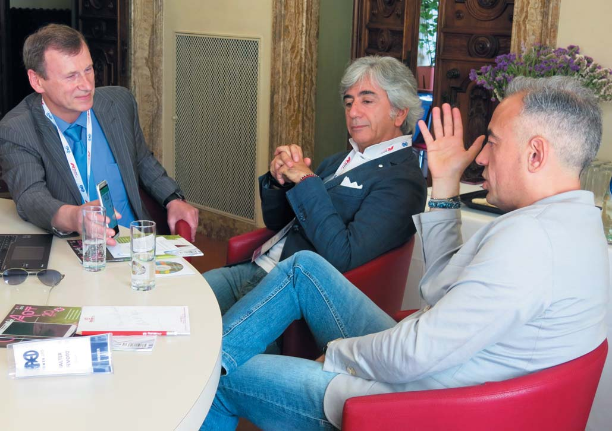
Сергій Радлінський, Анжело Путіньяно і Вальтер Девото під час інтерв'ю на Весняному конгресі ЄАЕС. Флоренція, травень 2015 р.
Вальтер: Я думаю, що місія Стайл Італьяно полягає в тому, щоб довести стоматологам, що не існує такого поділу, як «естетична стоматологія» та «неестетична стоматологія». Раніше це було великою дилемою, тепер усе змінилося. Пацієнти вже не приходять до мене з проханням виконати для них роботи саме з естетичної або неестетичної стоматології. Я просто намагаюся виконати свою роботу якісно, застосовуючи всі свої знання і вміння для вирішення проблеми з клінічної точки зору і з естетичної точки зору пацієнта. Тим самим ми підштовхуємо людей до гарної стоматології, кращої стоматології з використанням найякісніших матеріалів для естетики, які існують сьогодні.
Анжело: Ми можемо допомогти стражденним стоматологам, надавши простий протокол роботи. Показати клінічні випадки і всі можливі методи роботи в них. Ці методи доступні, їх зможе повторити будь-який стоматолог, і вони передусім фізіологічні. З іншого боку, завжди існувало два види стоматології, які постійно конкурували між собою. Це висока стоматологія та загальна стоматологія, і щоб покласти край цій «битві», потрібно, щоб уся стоматологія була естетичною, і, як уже казав Вальтер, ця стоматологія буде для всіх.
«Важливо, щоб кожен дотримувався принципу простоти»
ДентАрт: Члени спільноти «Стайл Італьяно» — це передусім італійці, і це логічно... Але не тільки італійці, у співтоваристві є іноземні члени, а у віртуальному просторі Стайл Італьяно подолав планку 50 тисяч послідовників на Фейсбуці... Як ви зібрали таку спільноту? Інакше кажучи, що таке Стайл Італьяно, у чому його магнетизм?
Анжело: Я гадаю, магнетизм полягає в тій філософії, яку несе Стайл Італьяно. Усі члени спільноти дотримуються однієї філософії і демонструють вирішення різних клінічних завдань в одному ключі. У цьому і полягає секрет нашого успіху.
Вальтер: Усі ми розуміємо, що світ рухається до нового способу спілкування — спілкування через соціальні медіа-ресурси, соціальні мережі, такі як Facebook, та інші веб-ресурси. Завдяки такому веб-спілкуванню ми надаємо кожній людині невелику платформу, де вона може спілкуватися з нами, демонструвати свої роботи і таким чином професійно зростати. У нас є багато таких прикладів, коли на виставках або зустрічах до нас підходять незнайомі стоматологи з різних країн і кажуть: «Щиро дякуємо за те, що тепер з'явилася можливість спілкуватися з вами і обговорювати професійні питання!».
ДентАрт: У кожного співтовариства, яке себе поважає, як у релігії, має бути своя Біблія! Як мені видається, такою біблією Стайл Італьяно є книга Джорді Манаути та Анни Салат «Layers». Я вдячний вам, що й мені знайшлося місце прикластися до неї! Наскільки ця книга охоплює різноманітність Стайл Італьяно? Стайл Італьяно — це суворе дотримання канонів чи розмаїття індивідуальних стилів в одному напрямку?
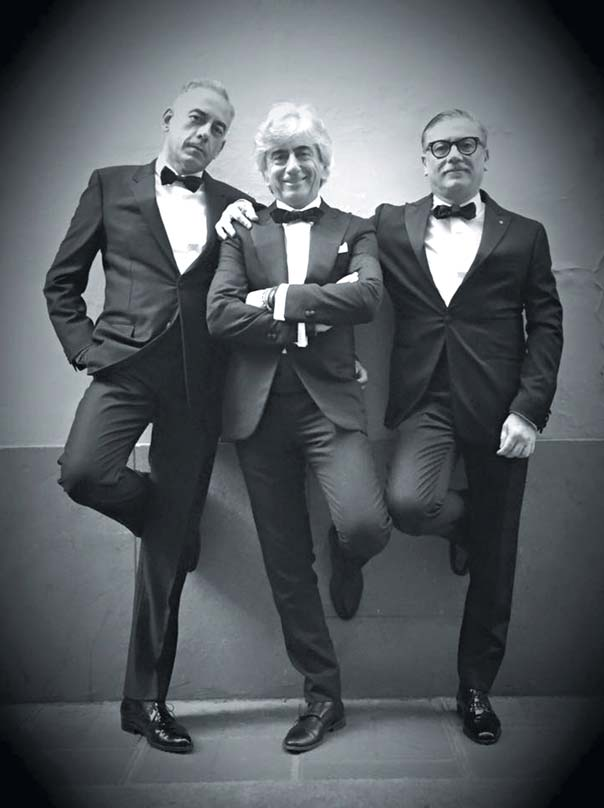
Вальтер Девото, Анжело Путіньяно, Даніеле Рондоні: «Італійці в естетиці найкращі!» Українські стоматологи скажуть те ж саме про себе...
Вальтер: Ми познайомилися з Джорді та Анною, коли вони були студентами останнього курсу Барселонського університету. Ми відразу помітили їхню пристрасть до стоматології, їхню креативність і тому запросили працювати до себе. Тепер вони працюють з нами в Італії.
Що ми хотіли вкласти в цю книгу? Насамперед шлях навчання естетиці через уже наявні знання, навички, практику. Це основна ідея книги.
Ми хотіли не просто показати клінічні випадки, а продемонструвати різні техніки роботи, які можна застосовувати у щоденній практиці естетичної стоматології. Що ж до філософії, звичайно, нам би хотілося дати потенціал окремим навичкам, але важливо, щоб кожен дотримувався принципу простоти, ми не перестаємо повторювати це членам нашої спільноти. Коли цей принцип набуває значення, це означає, що метод фізіологічний, доступний для будь-якого лікаря, але в той же час містить певну складність, яку ви додаєте в нього, використовуючи свої індивідуальні професійні навички. Але передусім усе має бути доступне для розуміння. Далі, виконуючи прості маніпуляції, ви можете продемонструвати своє ставлення до цієї теми.
Анжело: Кожен стиль працює, якщо він стоїть на трьох китах: фізіологічность, доступність і відтворюваність. Книга Джорді і Анни — це лише початок історії. В основу книги лягло все, що ми знаємо про світ композитів. Нам би хотілося випустити книги і з інших різних тем і аспектів стоматології, які будуть подані читачеві у тій же манері і філософії завдяки найкращим викладачам світу.
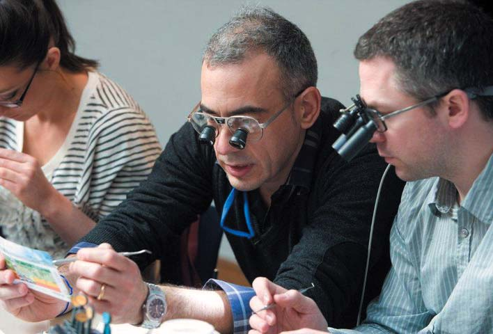
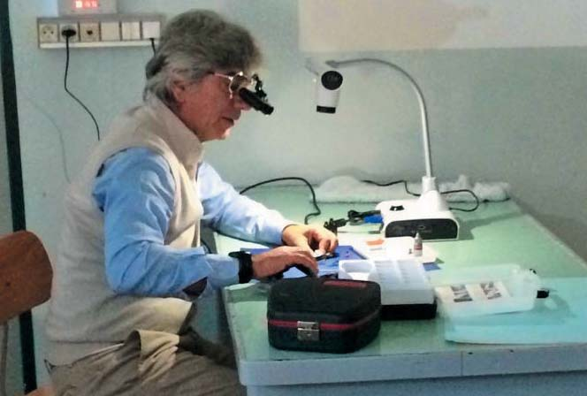
ДентАрт: Тобто основні принципи Стилю Італьяно — це фізіологічність, доступність і легка відтворюваність! Так?
Анжело: Саме так.
ДентАрт: Стайл Італьяно став популярним передусім у віртуальному просторі через Фейсбук. Але Стиль Італійці зустрічаються не тільки віртуально, а також і в реальному житті. Де можна зустріти члена клубу персонально, особисто? Доторкнутися... А до всього клубу?
Вальтер: Правду кажучи, оскільки ми засновники, то повинні просити інших об'єднувати нас і поширювати наші ідеї і філософію, тому ми залучаємо і запрошуємо у наше товариство людей з інших країн, щоб стоматологи з різних куточків планети могли зустрітися з представником Стайл Італьяно у кожній країні, де ми працюємо. Ми з Анджело їздимо кожні вихідні, зустрічаємося і спілкуємося з людьми, які нас запрошують. Ми дуже просто ставимося до цього питання, завжди відкриті для спілкування і вважаємо, що живе спілкування — важливий етап створення будь-якого гарного професійного товариства.
Анжело: Я цілком згоден з Вальтером. Крім того, найближчим часом ми хочемо охопити всі аспекти стоматології і організувати тур, відвідати 5-7 міст світу, де виступлять наші лектори, наші керівники і продемонструють наші методи роботи на різних стоматологічних напрямках. Я сподіваюся, ці заходи будуть досить успішними і підуть на користь і стоматологам, і нашій спільноті.
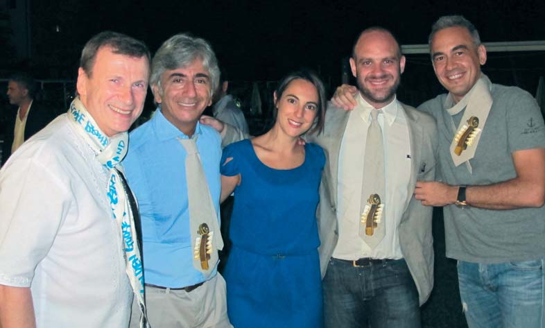
Краватки із зубастою віолончеллю, символом Призма-чемпіонату, личать до Італійського стилю. Піза Майстер-курс, 2013.
ДентАрт: Читачам «Вітальні» ДентАрту завжди цікаво, як такі відомі, імениті люди, як ви, вирішили обрати стоматологію своєю професією. Отже, як кожен з вас вирішив стати стоматологом?
Анжело: В юності я не думав, що стану стоматологом. І хоча здобув вищу медичну освіту за спеціальністю «Стоматологія», бо мої батьки бажали, щоб їх син був лікарем, сам я мріяв стати дизайнером одягу. Я займався цим 3-4 роки, але потім, побачивши, що моя сім'я категорично проти такої професії, обрав для себе найбільш творчу сферу в медицині, стоматологію, в якій потрібен не лише розум, але й креативність.
Вальтер: Я став стоматологом через маму, вона спрямувала мене у стоматологію. Можливо, це сталося через те, що після відвідин стоматолога в ті часи у неї завжди виникали фінансові труднощі. Я перший у своїй родині отримав можливість учитися. Моя сім'я займалася комерційною діяльністю у сфері барів, ресторанів, дискотек, і коли я захопився стоматологією, то вирішив, що хочу відійти якнайдалі від сімейної справи і обрати свій власний життєвий шлях. Я вибрав одного зі своїх кураторів і щодня приходив до нього, спостерігав і намагався знайти найбільш цікавий і приємний шлях освоєння спеціальності «стоматолог». На щастя, він зумів розвинути мій інтерес до цієї професії і бажання рости професійно. Я дуже радий, що справді маю задоволення від своєї професії і «палаю» вивченням нових напрямків і створенням нових проектів, таких, яким став Стайл Італьяно. Це те, що виходить за межі щоденної офісної рутини і допомагає мені розвиватися інтелектуально і професійно.
ДентАрт: Ви тоді ще не були знайомі один з одним... А як ви зустрілися і коли прийшло усвідомлення своєї спільної, я б сказав, апостольської місії Стайл Італьяно в цьому реальному і віртуальному світах?
Вальтер: Ми познайомилися досить давно. Нас часто запрошували виступати з однієї тематики на різні конгреси. І мені подобається той факт, що ми не були друзями або компаньйонами. Ми були знайомими, які поважали один одного як професіонали. Мене вразив той момент, що коли ми випадково розговорилися за ланчем про Стайл Італьяно, то моментально відчули, що налаштовані на одну хвилю, на один проект. Нам потрібна була хвилина, щоб зрозуміти, що це наша спільна місія, спільна мета, до якої ми хочемо йти. Ми не обговорювали деталі, не дискутували, і це справді дивовижно, тому що, як я вже говорив, ми не були компаньйонами або близькими друзями, ми просто були колегами, які прислухалися до професійної думки один одного.
Анжело: Так, ми дивилися на багато професійних питань однаково, але що справді дивує, це кількість часу, який минув з моменту виникнення ідеї проекту до його реалізації. Он-лайн проект «Стайл Італьяно» ми задумали на початку року, а до кінця року ми вже змогли його реалізувати, наше товариство стало доступним он-лайн. Для мене це був абсолютно новий досвід, до цього я не був зареєстрований у Фейсбуці, а Джорді весь час закликав нас туди і переконував, що це абсолютно інший світ. І через день-два я зрозумів, що це справді так, і не такий уже він і віртуальний, адже ти можеш там зустрітися з провідними професіоналами своєї справи.
ДентАрт: Яку роль у вашій професійній кар'єрі зіграла Європейська академія естетичної стоматології? Що б ви порадили тим, хто хоче бувати на її конгресах і прилучитися до неї?
Анжело: У моїй кар'єрі це не відіграло особливої ролі, але Європейська академія естетичної стоматології дала мені можливість познайомитися з найкращими стоматологами світу, обмінятися знаннями, філософією, навичками і секретами у нашій професії.
Ми б порадили всім охочим відвідувати конгреси ЄАЕС, ставати її членами. Це буде корисним для вашого професійного росту, там ви зможете зрозуміти, яких висот можна досягти у стоматології.
Вальтер: Я зацікавився ЄАЕС, ще коли був студентом і туди вступав мій наставник і викладач. Пізніше рішення стати активним членом цієї академії виникло через бажання розвивати навички і можливості, працюючи в певній галузі стоматології. Хотів би додати, що дуже важливо, на мій погляд, зрозуміти, що стоматологія всесвітня. Для стоматолога існує ризик зупинитися у професійному розвитку, сфокусувавшись на стоматології однієї окремої країни. У той момент, коли ти розумієш, що існують інші країни, з іншим менталітетом та іншими техніками роботи і матеріалами, ти стаєш відкритим до нових знань і міжнародної дискусії про стоматологію. На таких конгресах я отримую задоволення не лише від виступів лекторів, але й від можливості дізнатися бачення напрямку, в якому я працюю, з точки зору професіоналів з різних куточків світу.
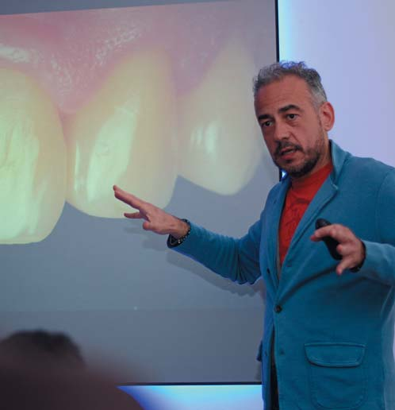
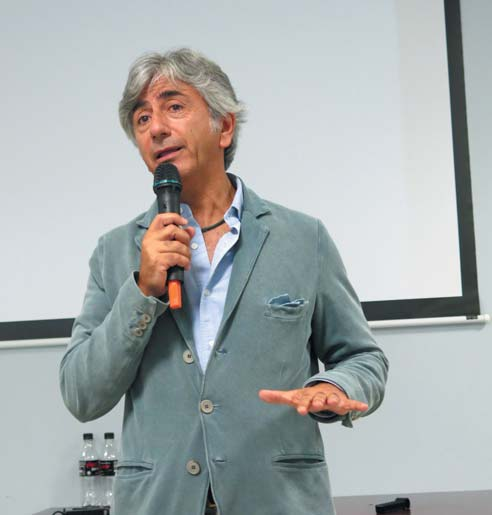
Один із принципів засновників Стайл Італьяно: «Потрібно бути завжди відкритим до нових знань».
«Це чудово, коли особисте життя переплітається з професійним»
ДентАрт: У клубі «Стайл Італьяно» утворилася і нова сім'я, я маю на увазі Джорді і Анну... Напевно, їм простіше розуміти одне одного і прощати той час, який необхідно провести за комп'ютером і в апостольських поїздках... А як ваш Стайл Італьяно підтримують ваші родини? Ви дружите сім'ями?
Анжело: На мій погляд, це проблема всіх людей, які живуть у такому ритмі, як ми. У тому сенсі, що наші сім'ї певною мірою страждають від наших тривалих роз'їздів, тому зараз я намагаюся брати в поїздки свою сім'ю, і в перервах між лекціями і конгресами ми проводимо час разом. Ми з Вальтером сподіваємося, що найближчим часом зможемо трохи менше їздити, бо долучимо до таких поїздок інших членів нашої спільноти, які допоможуть нести наші ідеї по всьому світу.
Анжело: Я вважаю, ми успішно поширюємо ентузіазм навколо себе, не лише в сім'ях стоматологів, але і в нашому особистому житті. Я бачу це по своїх доньках, вони завжди цікавляться, куди я їду, над чим працюю. І я думаю, що люди, які працюють у нашому офісі, усвідомлюють, що ми є символом італійського стилю у світі і пишаються цим. Це чудово, коли особисте життя переплітається з професійним!
Анжело: Сім'ями ми зустрічаємося досить часто, бо мешкаємо з Вальтером по сусідству. Періодично влаштовуємо спільні сімейні поїздки. У вересні минулого року, наприклад, були у Нью-Йорку із сім'ями і відзначали мій день народження.
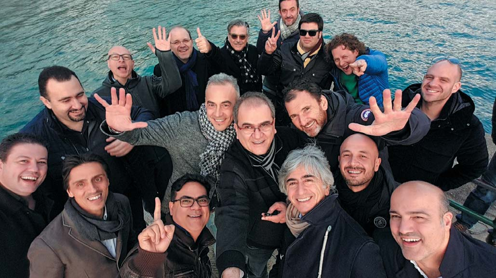
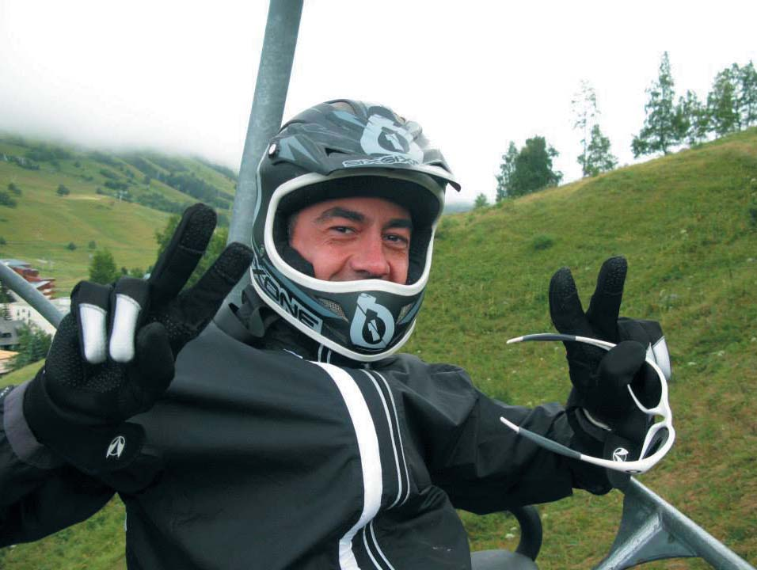
«Стоматолог нового покоління повинен миттєво розуміти, що потрібно пацієнтові»
ДентАрт: Стайл Італьяно дуже динамічний, з'являються нові люди, нові ідеї, нові методи і пристосування... Яким ви бачите майбутнє стоматології, естетичної стоматології та Стайл Італьяно в ній?
Анжело: Звичайно, ми не зупиняємося на досягнутому і продовжуємо шукати нові способи роботи в цій галузі стоматології — у тому сенсі, що, дотримуючись нашої філософії, ми пробуємо створювати нові способи і техніки реставрації зубів не для окремих вузьких професіоналів, а для пересічних стоматологів. І коли нам вдається створити щось для таких стоматологів, то ці методи стають корисними і для стоматологів високого рівня в цій галузі стоматології.
Вальтер: Я вважаю, ми змогли створити нову платформу, не академію, не навчальний клуб, складно сказати, чим саме сьогодні є Стайл Італьяно, але цей проект став результатом ідеї об'єднати розуміння потреб стоматолога і потреб компаній. Звичайно, майбутнє стоматології бачиться мені яскравим, це стосується і популярних напрямків стоматології — в тому сенсі, що компанії будуть краще розуміти, що потрібно стоматологам, а стоматологи зрозуміють, що ми всі залежні один від одного.
Зрештою, створена нами платформа, котру, як уже сказав Анжело, ми продовжуємо розширювати за допомогою різних нових напрямків, буде, на наш погляд, абсолютно новою інфраструктурою в стоматології, яка не має аналогів у світі.
ДентАрт: Так якою, на Ваш погляд, все-таки буде стоматологія майбутнього: мануальною чи цифровою?
Анжело: Технічний прогрес невідворотний, і можливо, в майбутньому стоматологія стане більш комп'ютеризованою, але обов'язково з мануальною участю стоматолога. Тому, щоб бути затребуваним у майбутньому, необхідно освоювати нові цифрові технології.
Вальтер: Якщо ти позиціонуєш себе як гарного фахівця, ти повинен уміти лікувати пацієнтів і з використанням сучасних цифрових технологій, і без них. Стоматолог нового покоління повинен миттєво розуміти, що потрібно пацієнтові. У нинішній період кризи ми маємо допомогти людям професійно працювати з простими матеріалами і техніками і високо цінувати нашу професію. Це те, на чому ми акцентуємо увагу учасників наших курсів і семінарів.
ДентАрт: І традиційні побажання читачам «ДентАрту»...
Анжело: Ми можемо побажати вашим читачам і далі залишатися з журналом «ДентАрт», дотримуватися Вашої методики роботи, підвищувати рівень естетичної стоматології у східних країнах Європи. Ви, Сергію, справді відома особистість, професіонал. Ми знаємо Вас уже багато років. На момент нашого знайомства Ви були єдиним стоматологом зі Східної Європи, якого знали і на Заході. Сьогодні багато Ваших учнів з країн Східної Європи стали відомими на Заході саме завдяки Вам, Вашій концепції та подачі свого бачення стоматології. Можу побажати Вам і читачам «ДентАрту» продовжувати в тому ж дусі.
Вальтер: Коли я вперше відкрив Ваш журнал, я зрозумів, яка величезна кількість людей отримала можливість познайомитися з Вашими досягненнями у стоматології. Коли я став подорожувати у країни Східної Європи, Ви, Сергію, були найвідомішим стоматологом у консервативній стоматології в цих країнах. Я гадаю, ваші читачі усвідомлюють, як підвищується якість їхньої роботи, коли вони знайомляться з новими технологіями і матеріалами в журналі. Їхня професійна пристрасть проростає із зерен, які сієте Ви. Я бажаю їм зуміти виростити чудові професійні плоди з цих зерен!
ДентАрт: Додам, що, наслідуючи ваш приклад зробити Стайл Італьяно доступним для всіх віртуально, ми також перенесли проведення Призма-чемпіонату у віртуальний простір для спрощення спілкування між стоматологами з різних країн, які хочуть взяти участь у Призма-чемпіонаті. Тепер відбірковий тур буде проводитися віртуально, і спробувати свої сили в ньому зможуть стоматологи з будь-якої країни світу.
Дякую за інтерв'ю, за ваші цікаві відповіді!
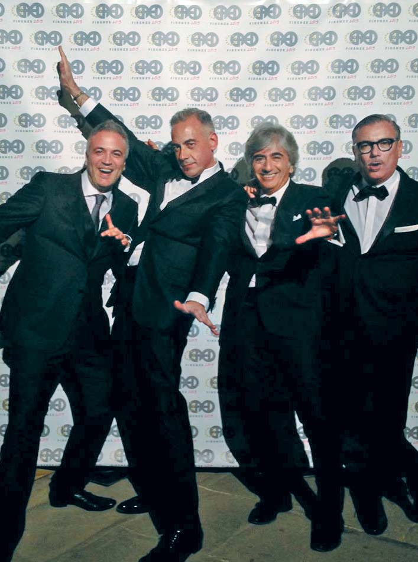
Джузеппе Марчетті, Вальтер Девото, Анжело Путіньяно і Даніеле Рондоні — креативне і веселе ядро «Стайл Італьяно». Флоренція, 2015.